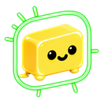

github.com unless you are on GitHub Enterprise
Server, in which case use your own host — access to it is requested
when you save.
| Permission | Needed for |
|---|---|
| Repository → Metadata | Mandatory; implied by any other repo permission |
| Repository → Pull requests | Open PRs, review state, merged PRs |
| Repository → Issues | Open issues assigned to someone |
| Repository → Checks | The "checks failing" state — optional |
| Organisation → Members | The "Match logins from GitHub org" button — optional |
404 rather than
403. A classic token needs repo +
read:org, but repo also grants write
access to every private repo you can see — prefer fine-grained.
assets/brand/ are untracked by git. Drop a
logo there and point this at it; single-colour wordmarks are inverted
automatically in light theme.
assets/avatars/ in the
extension folder and point a row at one (e.g.
assets/avatars/sam.png) to replace that person's Jira
profile picture everywhere in the app. The path is relative to the
extension folder — URLs are not accepted. That folder is git-ignored,
since photos of colleagues are personal data. Reload the extension
after adding files.
customfield_10050, timetracking). Entries from
config.local.json are merged in and shown below.
owner/name and a
pasted repo URL both work too. This is the whole scope of the GitHub
queries: a token with access to other repos will not pull them in, and
an empty list means GitHub sync is off however the enable box is set.